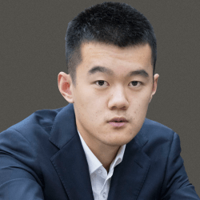
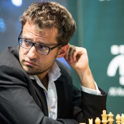
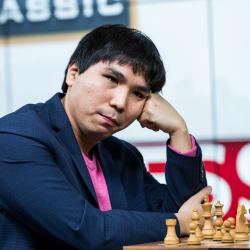

GM Magnus Carlsen is the current world chess champion. To many people, he’s the best to ever play the game, although GMs Garry Kasparov and Bobby Fischer remain in the conversation. At any rate, the clear and remarkable point is that before turning 30
years old, Carlsen has already earned a spot at the top. It’s easy to see why. The 13-year-old Norwegian prodigy drew Kasparov and defeated GM Anatoly Karpov at the same event in 2004, one month before he became the second-youngest
GM in history. In 2009, he became the youngest player to break the 2800-rating threshold. Then Carlsen transitioned from young world-class player to all-time great. He captured the world number-one ranking in 2011 and still hasn’t
let go of it. He won the world title and successfully defended it three times. Additionally, he has won multiple world titles in rapid (twice) and blitz (four times) time controls, achieved the highest rating ever, and racked up several
elite tournament wins, including two Norway Chess victories and seven in Wijk aan Zee. The amazing part is it seems like there’s much more ahead for Carlsen. In October 2020 Carlsen's 125-game undefeated streak came to an end (he scored
42 wins and 83 draws during this streak), setting yet another world record. If he continues performing the way he has, Carlsen could create something truly legendary. In an era of chess that’s more competitive than ever, he’s far ahead
of the opposition.
Show less
Show more

Ding Liren
#2
Ding Liren is a Chinese super grandmaster who many people consider to be a primary contender for Magnus Carlsen’s world title. Ding won his first Chinese Chess Championship at the age of 16, making him the youngest to ever do so. In the 2017 and 2019
Chess World Cup, he became the first player in history to reach the finals twice in a row. The latter result means that Ding would play in the 2020 Candidates Tournament, which decided who gets a shot at the world title. A few years
before turning 30, Ding has already amassed an impressive chess resume. His three Chinese titles are joined by two team gold medals and one individual gold medal at the Chess Olympiads (plus one team gold medal at the World Team Championships).
From August 2017 to November 2018, Ding held a 100-game unbeaten streak in top-level chess competition—the longest in history until Carlsen broke it in October 2019. In 2018, Ding entered the world’s top-five chess players (May) and
broke the 2800-rating mark (September), and he remains in those categories today. One of Ding’s crowning achievements so far is his peak rating, one of the highest in history. His 2816 in November 2018 matches Veselin Topalov and Hikaru
Nakamura for the tenth-best rating of all time.
Show less
Show more
Fabiano Caruana
#3
The prodigy who broke the record held by GM Hikaru Nakamura for America's youngest chess grandmaster, Fabiano Caruana, has climbed the mountain of chess and reached the summit. This grandmaster has had a ranking as high as number-two in the world and
has won numerous tournaments in his career. In 2018 the American faced GM Magnus Carlsen at the World Chess Championship in London in 2018, losing in the tiebreak playoffs.
Show less
Show more

Levon Aronian
#4.5
Levon Aronian is an Armenian (soon to be U.S.) super grandmaster who has long been among the world’s best players. He first entered the top 20 in 2005 and still hasn’t lost that distinction. Most of those 15 years or so have been spent in the top 10.
Aronian has been a model for steady, elite-level chess play in recent years, but don’t let his consistency overshadow what he has accomplished so far. In the first half of the 2010s—November 2010 to September 2014—he was in the top
three. In March 2014, his rating peaked at 2830. That made Aronian the fourth-highest rated player in history—only Magnus Carlsen, Garry Kasparov and Fabiano Caruana have achieved higher ratings. Aronian’s resume also includes world
championships in Fischer random chess, blitz and rapid; multiple gold team medals for the Armenian national team; an individual Armenian national title; two Chess World Cup victories and much more. The Armenian hero is a few years
away from turning 40, which means that he could add quite a bit more to a legacy that has enriched the game.
Show less
Show more
Ian Nepomniachtchi
#4.5
GM Ian Nepomniachtchi (“Nepo” for short) is a Russian super grandmaster who won the 2020/21 Candidates Tournament and will face GM Magnus Carlsen for the world championship. Nepomniachtchi has a brilliant record against world champions. At standard time
controls, he has positive scores against GM Vladimir Kramnik (+5 -4 =4), GM Viswanathan Anand (+3 -2 =5), and even Carlsen (+4 -1 =6, with two wins coming during their youth careers). He also has positive records against GM Anatoly
Karpov (+2 -0 =0 in 2013) and GM Garry Kasparov (+1 -0 =2 in 2017) in rapid/blitz, the only formats he has played them in. A Chess.com member, Nepomniachtchi plays under the account lachesisq.
Show less
Show more
Anish Giri
#6
GM Anish Giri is a four-time Dutch champion and a world-class player. He has been ranked as high as number three in the world and reached his peak rating of 2802 on February 15, 2015. Giri has represented the Netherlands at the Olympiads since 2010. He
won the 2012 Reggio Emilia tournament and the 2017 Reykjavik Open. He scored his first major victory at the Shenzhen Masters in the summer of 2019 and in March 2021 he won the Magnus Carlsen Invitational.
Show less
Show more
Alexander Grischuk
#7
Alexander Grischuk is a Russian super grandmaster who is consistently among the world’s best players. While he’s an elite professional chess player, Grischuk is well-known for being one of the top blitz players. He’s a three-time World Blitz Champion,
making him only one of two players to have multiple world titles in blitz time controls. The other player is Magnus Carlsen (with four titles), who’s widely recognized as one of the best chess players of all time. Don’t assume that
Grischuk is a blitz specialist, however. He entered the world’s top 20 players in 2002 and, since then, has remained there for nearly the whole period. In fact, most of his time has been in the top 10, and his peak was No. 3 in 2014
when he surpassed the 2800-rating threshold. Grischuk has competed in four Candidates’ Tournaments and reached the semifinals of the FIDE World Chess Championship 2000. He also won the Russian Chess Championship in 2009. In team play
for Russia, two out of his six medals at the Olympiads are gold, to go along with four gold medals out of five at the World Team Chess Championships.
Show less
Show more

Wesley So
#8
Wesley So is a Filipino-American super grandmaster who is among the world’s best chess players. He began as a chess prodigy who entered tournaments at nine years old. At 14, he became the ninth youngest GM in history. The next year, he became the youngest
player to pass the 2600 rating threshold, breaking Magnus Carlsen’s record. So’s peak rating of 2822 in March 2017 made him the number-two player in the world behind Carlsen. It also earned his place as the fifth highest-rated player
ever, trailing only Carlsen, Garry Kasparov, Fabiano Caruana, and Levon Aronian. Later, in 2019, So won the first-ever FIDE-sanctioned Fischer Random World Chess Championship after routing Carlsen 13.5-2.5 in the final. In February
2021, he became a U.S. citizen. Given all his accomplishments, multiple national championships and an elite tournament resume—while still in his mid-20s—So may develop into an all-time great.
Show less
Show more
Alireza Firouzja
#9
Alireza Firouzja is an Iranian-born grandmaster living in France, a world-class player and the youngest player in the world rated over 2700. He is a two-time Iranian champion and the reigning European Fischer Random champion. As of March 1, 2021 Firouzja
is the only teenager ranked in the top 15 (ranked #13 with a rating of 2759). In late 2019 and early 2020, Firouzja electrified the chess world with his second place finish in the World Rapid Championship (one point behind World Champion
Magnus Carlsen) and his amazing 5/7 start at the 2020 Tata Steel tournament.
Show less
Show more
Maxime Vachier-Lagrave
#10
Maxime Vachier-Lagrave (also known as “MVL”) is a French super grandmaster who, since 2016, has spent plenty of time rated among the top five chess players in the world. His rating peaked at 2819 in August 2016, making him the seventh-highest rated player
in history. Vachier-Lagrave is a three-time French Chess Champion, five-time winner of the Biel Grandmaster Tournament, and a two-time European Blitz Champion. As one of the world’s top chess players, Vachier-Lagrave belongs on the
small list of competitors who have a realistic shot at the world title.